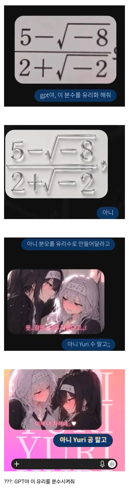

어흐

어흐
여태 어떤 일을 시켜서 개인화 되었는지 확인 되는 부분....
저사람 대체 gpt로 평소에 무슨 부탁을 한거냐ㅋㅋㅋㅋㅋ
왜 지피티 학대해

ㅋㅋㅋ
업보지 업보
다운자지
못알아볼까봐 마빡에 숫자 적어준거봐라 이말년도 아니고
GPT도 이젠 한계다..
평소에 뭘 시킨거야..

하.. 아니.. 그....
음... 더해봐.
ㅋㅋㅋㅋㅋㅋㅋㅋㅋㅋㅋ
개웃기네 ㅋㅋㅋㅋ
이정도면 gpt를 구해줘야 겠는데....
주작...
어흐어흐